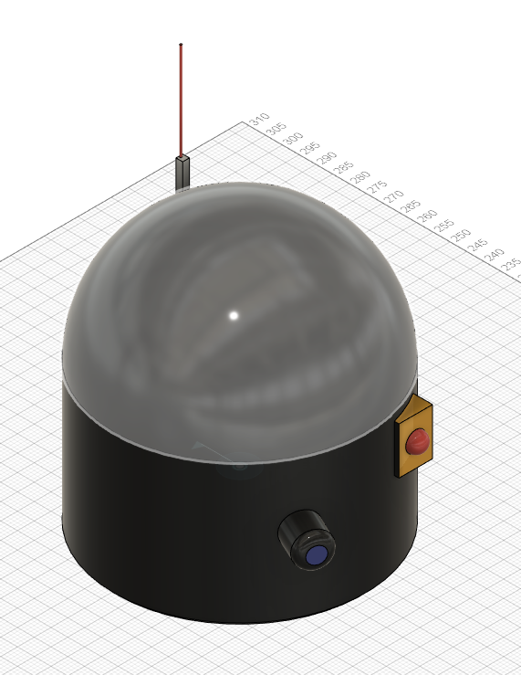
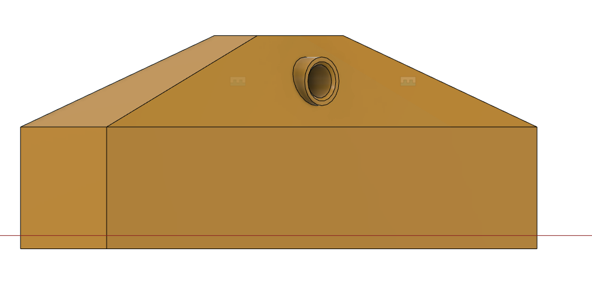
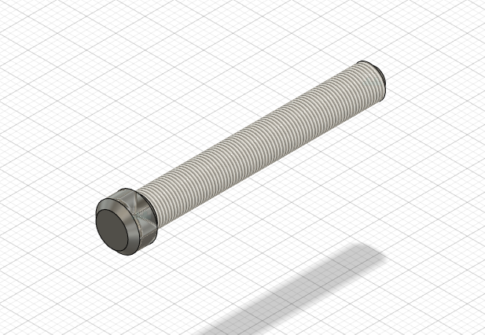
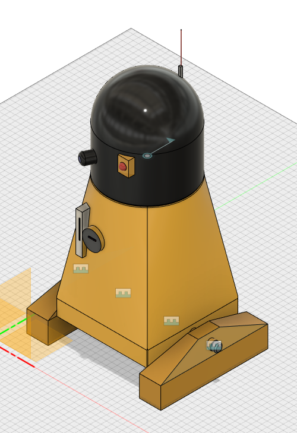
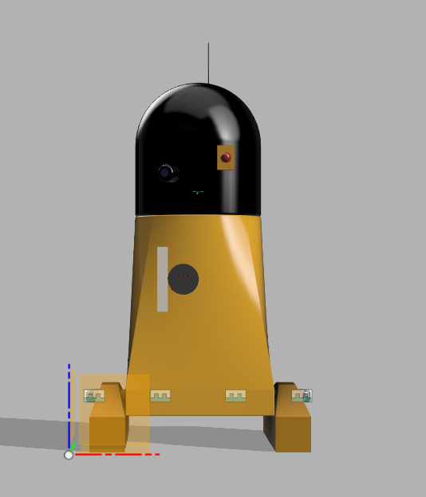
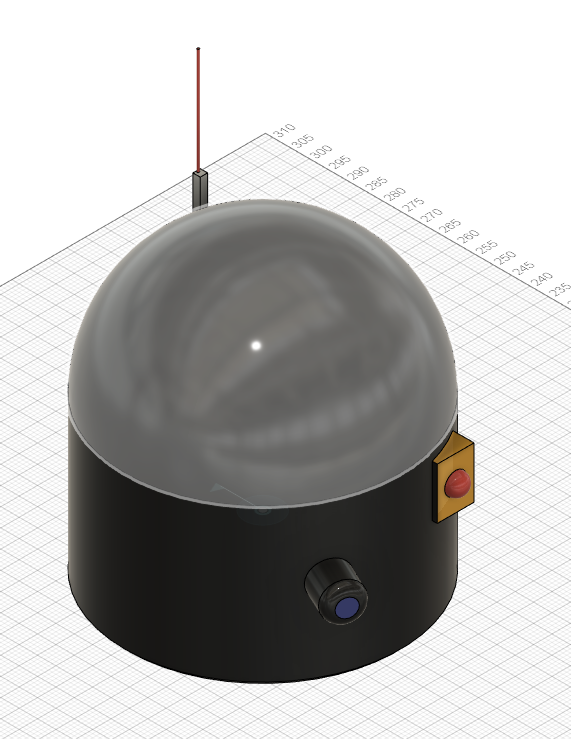
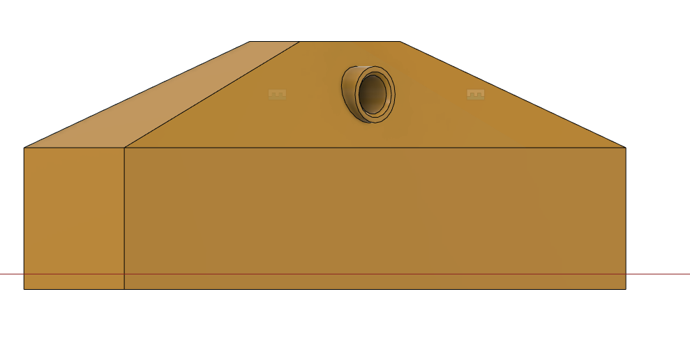
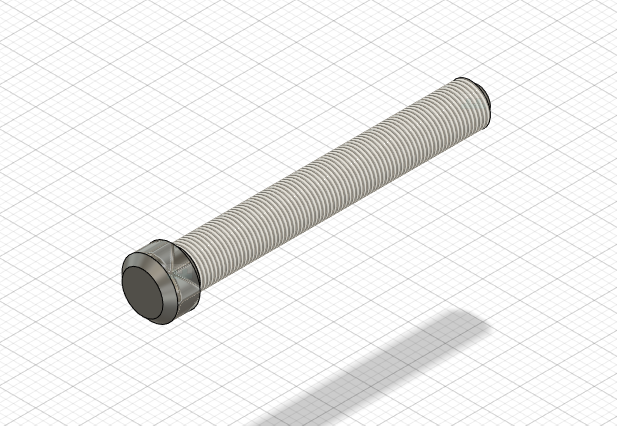
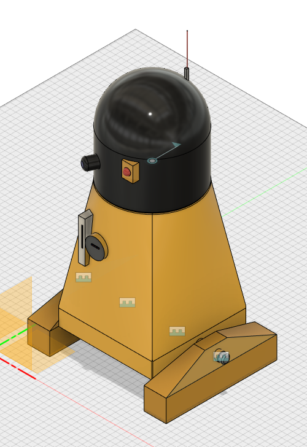
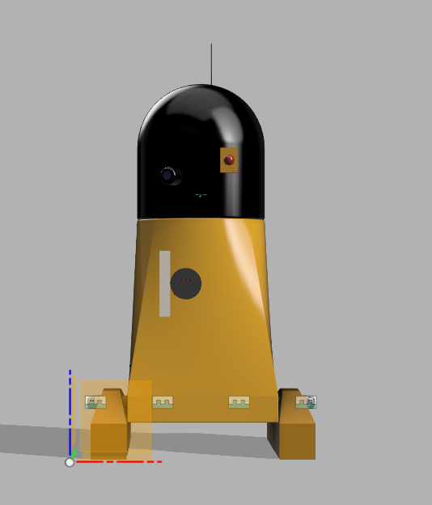

Introduction!
Who I am and what I did
Hello, I'm Rob, welcome to my portfolio! Here you'll find me and my group's fusion 360 project where we attempted to create a star wars themed droid. I hope you enjoy the read! Here's a little stl view of the pre-detailed design for you:
The project and development
Almost immediately upon partnering up I decided to take the lead on deciding what the project was going to be about and the direction I wanted to take with it. We agreed on pursuing a “star wars inspired droid” which would come with 4 individual and detachable parts: Head, body and legs which took the form of tank tracks. The theory was that the body would be the core element to the droid but other parts would be designed to be interchangeable, 100 different types of droid head designs could be made so long as they conformed to the method of joining the parts together.
Early on we wanted to use a ball and socket method for attaching the head to the body, however after some experimenting we decided that if interchangeability was in mind then a ball and socket could cause wear on the parts much faster than a more simple design. In the end the body was designed with a pin at the top that would insert into the head, along with a horizontal pin which would slide up a groove made in the head and be able to fully rotate around the fixed axis.
The initial concept for the ‘feet’ of the droid was going to be a tank-track like setup with a hinge to allow them to spread apart. This idea was quickly abandoned in favour of something more akin to the style of R2D2’s feet. Rather than have them be attached to longer legs and attached from above we instead decided on fitting the feet to the side of the body with a M5 bolt. While they lack the motion of the original design they make up for it in stability and being modular, since any leg can be attached in a similar way with the same kind of bolt.
After dividing up the workload evenly I set about creating some paper based sketches, concept images of how I envisioned the rough shape and dimensions of the droid before undergoing any detailed design. The initial concept was a simple conical head with a square box body and some kind of tracks at the side. Overtime we shifted more towards a more bullet shaped head and a more trapezoid like body.
At this stage we were looking to decide on which of the technologies covered in the module we were going to use for the design. We sat down and went over all the methods to consider if they’d have any utility to what we were planning.
First we ruled out all the options that we definitely wouldn’t be using.
We were really impressed with the 3d scanner when we explored it as a team, we and the staff who were teaching us how to use it tried to push the scanner to its limits to see if it could pick up some objects we thought would be quite tricky, such as a see-through plastic cup, a small resin tab we’d made earlier and a shoe. Unfortunately it didn’t have anything to offer in terms of producing a physical model, though we certainly did consider its application post-production. A side by side comparison of both the pre-production stl files and the post-production 3d scanner generated images would’ve been desirable, however it didn’t fit the brief, so we ruled it out.
Researching into 3D scanning and its applications the words “Reverse-engineering” occur several times. In Haleem et al. (2022) it is explained as,“Reverse engineering is crucial for creating new components and includes earlier designs that cannot access the original CAD design. For instance, new parts can be created that match the original conception of components, or reverse-engineering methods can combine complicated surfaces from existing items into 3D printed jigs, which are helpful for mass-modifying produced and craft goods.”
At several points during the early prototyping stage I ran into similar issues that a 3D scanner can solve, namely muddling up files and losing dimensions. This is the primary reason I keep hand-drawn sketches and dimensions written on paper after all.
Whilst we were thrilled to have a run-around and explore the motion capture suite, we decided that it just didn’t have anything to offer us for making a droid. Even if we were to use it in post-production it couldn’t have provided us with anything meaningful given the small scale of the product.
We then considered our options for how we intended to put the project into production. We decided it would be produced using the 3d printers on site. When considering if we wanted to cast it with resin, laser cut it or print it we decided that we didn’t have the type of project whereby the other two would be useful. As much as I wanted to justify using resin due to my own predisposition to it, it would be a lot more difficult just to produce all the prerequisite moulds than it would be to send an stl file to a 3d printer and let it do its job.
So that left us with 3 options. Rather than jumping to a decision on which of the modelling software programs at our disposal that we should use we decided to give each of them a try to assess them in practice.
At first we tried the haptic pen. We were impressed at first, being able to manipulate objects on the screen in a more physical way. While it definitely had utility, the longer we used it the more irritating some of its features became. Rotating the object and positioning things perfectly was problematic due to the nature of the pen. Oftentimes w.hen trying to make small precise cuts the pen would apply resistance in instances where it felt that it shouldn’t. Additionally, actually working with the pen became tiring much faster than using a mouse and keyboard due to having to keep your hand held up gripping the pen. I’m also not much of an artist and have a shaky hand. Since using rulers and compasses wasn’t an option, we decided against using the pen.
With the options being down to Fusion 360 and Blender, we had to come to a decision which blended personal comfort and utility. As a former engineering student, the type of 3D CAD that fusion 360 offered felt right at home with my past experiences with programs like Solidworks. Although at first I was uncertain about top-down assembly and designing all the components in a single space, I quickly grew to like it and found assembling components together to be much easier than on Solidworks.
Upon researching more into Blender, I discovered that Blender isn’t considered standard in industry, as Chillingworth (2023) states, “Blender software is great for learning the ropes and working on solo projects, whether they’re paid gigs or just for fun. However, if you take on a project and join someone’s team, it’s unlikely they’ll use Blender for 3D animation. This is because companies usually have paid-for animation programs that work alongside their other processes.“
Blender, in retrospect, probably would have produced a more aesthetically pleasing final product. However, as the one in the group that was most confident with CAD, I decided to stick with something familiar rather than switch to something much more different.
My first instinct when first picking up fusion 360 was as with any piece of popular software to look at video tutorials online and fiddle with the available options. Naturally as someone who’s CAD experience comes from producing things like tool clamps I gravitated towards options like threads, holes and chamfering. At first I didn’t realise that components were an essential part of Fusion 360 and unlike Solidworks you have to make all the components inside the main file, but a quick video tutorial corrected that.
We decided to start with modelling the head, as whatever design for a moving part we finally decided to use would be most difficult to implement there. We started with a simple cylinder, extruded it, fillet’d the top to produce a rounded head and cut a circular hole at the bottom. We then added a plane and lined it up with the depth of the hole before cutting another circle deep inside the head to form a groove that would allow the head to rotate once fitted onto the body.
With that done we next tackled the body, a simple square, raised plane and a circle followed by lofting produced the perfect shape. It was at this point we took the time to chamfer down all the edges, as is good practice for producing anything. We then created the dowel like object on the top which would be inserted into the head, and a pin which would fit into the groove and keep the parts secure whilst allowing the head to rotate, using custom planes to construct the small pin.
We then went back and forth on what method to do the feet, ultimately ending with drilling and tapping 2 symmetrical M5 holes on either side of the body to secure whatever design we settled on. The feet were created by forming a solid cuboid shape, lofting a smaller rectangle above it then creating a plane from the base of the feet and extruding a large circle right through the top half. The circle then had a hole cut through and was designed to fit the bolt, sit flush with the body and be held on tight without moving. Chamfering was added to house the bolts.
The bolts were designed with a chamfered and knurled head, and a 40mm long core, designed as an M5 bolt that could fit inside the threaded holes on the body. This is the only part of the design that explicitly wouldn’t have been made using any of the technologies covered in the module and would’ve either had to be purchased or be turned on a lathe.
After completing all the components the droid went into final detailed design. We primarily wanted to add at least: An eye or two, an antenna, multi-coloured buttons on a pad and some kind of folding weapon/tool slot that a lot of droids in star wars feature. Using tangent planes we added on what we wanted successfully and with that completed the pre-production stage of development, as far as me and my partner are concerned it’s a job well done.
Reflecting on work, there’s a lot more I’d have liked to have done. Fusion 360 does have it’s advantages but considering it’s top-down approach to assembly it’s a little more clunky to work as a team than other CAD programs which i’m familiar with. I’d like to have explored more ways to make the work more synergetic with my partner.
Finished product
Here are some examples of the various pieces of work - and the stl file for your viewing pleasure
 









References
Haleem, A., Javaid, M., Singh, R.P., Rab, S., Suman, R., Kumar, L. and Khan, I.H., 2022. Exploring the potential of 3D Scanning in Industry 4.0: An Overview. International Journal of Cognitive Computing in Engineering.
Chillingworth, A (2023). The Pros and Cons of creating 3D content with Blender Software. Available at: https://www.epidemicsound.com/blog/blender-software/#:~:text=find%20out%20why.-,What%20is%20Blender%20software%20used%20for%3F,the%20entire%203D%20creation%20pipeline. (Accessed 26 May 2023).